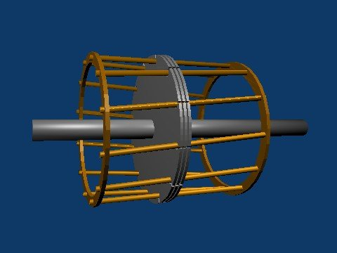
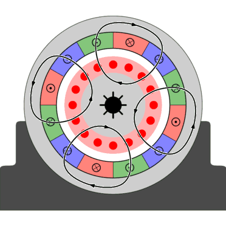
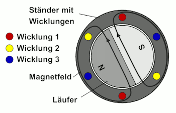

⚡️ Grundlagen und Arten
Wechselstrommotoren sind Elektromotoren, die mit Wechselstrom betrieben werden. Es gibt zwei Haupttypen von AC-Motoren:
- Asynchronmotor
- Synchronmotor
⚙️ Asynchronmotor
Aufbau
Hauptkomponenten::
- Stator: Erzeugt durch eine Drehphasenwicklung ein rotierendes Magnetfeld (Drehfeld)
- Rotor:
- Käfigläufer (Kurzschlussläufer): Besteht aus leitenden Stäben, die an den Enden durch Ringe kurzgeschlossen sind. Ist vom Stator umgeben.

- Käfigläufer (Kurzschlussläufer): Besteht aus leitenden Stäben, die an den Enden durch Ringe kurzgeschlossen sind. Ist vom Stator umgeben.

Funktionsweise
Funktion:
- Die drei Phasen (U, V, W) in der Statorwicklung erzeugen ein rotierendes Magnetfeld
- Dieses Drehfeld induziert eine Spannung in den Leitern des Rotors (Käfigläufer)
- Der durch die Induktion fließende Strom erzeugt ein eigenes Magnetfeld im Rotor
- Die Wechselwirkung zwischen dem Stator-Drehfeld und dem Rotor-Magnetfeld erzeugt ein Drehmoment
- Der Rotor beginnt, sich zu drehen, um dem Drehfeld zu folgen
- Der Rotor dreht sich immer etwas langsamer als das Stator-Drehfeld. Dieser Unterschied (Schlupf) ist notwendig, da sonst keine Spannung induziert und somit kein Drehmoment erzeugt würde

📝 Formeln
\[ n_s = \frac{f}{p} \]
Synchrondrehzahl
- \(n_s\): Synchrondrehzahl (Drehzahl des Drehfeldes, in 1/s oder Hz)
- \(f\): Netzfrequenz (in Hz)
- \(p\): Polpaarzahl (Anzahl der Polpaare der Ständerwicklung)
\[ s = \frac{n_s - n}{n_s} \]
Schlupf
- \(s\): Schlupf (dimensionslos, oft in % angegeben)
- \(n_s\): Synchrondrehzahl
- \(n\): Tatsächliche Drehzahl des Rotors
\[M \sim s \] Drehmoment ist proportional zum Schlupf, für kleinen Schlupf
- \(M\): Drehmoment
- \(s\): Schlupf
Kippmoment
Das Kippmoment ist das maximale Drehmoment, das ein Asynchronmotor erzeugen kann. Übersteigt die Last dieses Moment, kann der Motor die Drehzahl nicht mehr halten und bleibt abrupt stehen. Er "kippt".
Anwendungen (Asynchronmotor)
- Industrielle Antriebe (Pumpen, Lüfter, Förderbänder, Werkzeugmaschinen)
- Haushaltsgeräte (Waschmaschinen, Kühlschränke, Ventilatoren).
- Elektrowerkzeuge.
- Elektromobilität
Vor- und Nachteile (Asynchronmotor)
Vorteile
- Einfacher und robuster Aufbau
- Wartungsarm (keine Bürsten, kein Kommutator)
- Kostengünstig
- Hoher Wirkungsgrad
- Selbstanlaufend
Nachteile
- Drehzahländerung nur durch Frequenzumrichter oder Polumschaltung
- Hoher Anlaufstrom
- Schlechter Leistungsfaktor bei Teillast
⚙️ Synchronmotor
Aufbau
Der Synchronmotor ähnelt dem Asynchronmotor, hat aber einen entscheidenden Unterschied im Rotor:
- Ständer (Stator): Erzeugt ebenfalls ein Drehfeld
- Läufer (Rotor):
- z.B. Permanentmagnet-Rotor: Enthält Permanentmagnete

Funktionsweise
So funktioniert der Synchronmotor:
- Der Drehstrom erzeugt ein rotierendes Magnetfeld im Stator
- Der Rotor erzeugt mit den Permanentmagneten ebenfalls ein Magnetfeld
- Das Magnetfeld des Rotors "rastet" in das rotierende Magnetfeld des Stators ein
- Der Rotor dreht sich mit der gleichen Geschwindigkeit wie das drehfeld des Stators -> Synchron
- Bei Belastung verschiebt sich der Rotorwinkel relativ zum Statorfeld, bei Überlastung bleibt er stehen
📝 Formeln
\[ n_s = \frac{f}{p} \]
Synchrondrehzahl
- \(n_s\): Drehzahl (1/s)
- \(f\): Netzfrequenz (Hz)
- \(p\): Polpaarzahl
\[M \sim \sin(\delta)\] Drehmoment ist abhängig vom Lastwinkel/Polradwinkel
- \(M\): Drehmoment
- \(\delta\): Lastwinkel / Polradwinkel (der Winkel zwischen dem rotierenden Magnetfeld des Stators und dem Magnetfeld des Rotors unter Last)
Anwendungen (Synchronmotor)
- Präzise Drehzahlsteuerung (z.B. in Uhren, Positionierantrieben)
- In Kraftwerken als Generatoren, in Pumpen, in Walzwerken
- Anwendungen, bei denen ein konstanter Leistungsfaktor wichtig ist
Vor- und Nachteile (Synchronmotor)
Vorteile
- Konstante Drehzahl, unabhängig von der Last
- Hoher Wirkungsgrad, auch bei Teillast
- Hohe Leistungsdichte
Nachteile
- Nicht selbstanlaufend und benötigt Anlaufhilfe
- Komplexerer Aufbau als Asynchronmotoren
- Höhere Kosten als Asynchronmotoren
- Fällt bei Überlastung aus